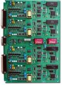

2.7.1. Общие сведения о регистрах
Регистр (англ. register) — последовательное или параллельное логическое устройство, используемое для хранения n-разрядных двоичных чисел и выполнения преобразований над ними.
Регистр представляет собой упорядоченную последовательность триггеров, обычно D, число которых соответствует числу разрядов в слове. С каждым регистром обычно связано комбинационное цифровое устройство, с помощью которого обеспечивается выполнение некоторых операций над словами. Принципиальной разницы между регистрами и отдельными D-триггерами не существует. Правда, триггеры, входящие в состав регистров, не имеют такого количества разнообразных управляющих входов, как одиночные триггеры.
Фактически любое цифровое устройство можно представить в виде совокупности регистров, соединённых друг с другом при помощи комбинационных цифровых устройств.
Основой построения регистров являются D-триггеры и RS-триггеры. На схемах регистры обозначаются буквами RG. В отечественных сериях микросхем регистрам соответствуют буквы ИР.
Операции в регистрах:
- приём слова в регистр;
- передача слова из регистра;
- поразрядные логические операции;
- сдвиг слова влево или вправо на заданное число разрядов;
- преобразование последовательного кода слова в параллельный и обратно;
- установка регистра в начальное состояние (сброс).

Рис. 22.1. 4-х разрядный сдвиговый регистр.